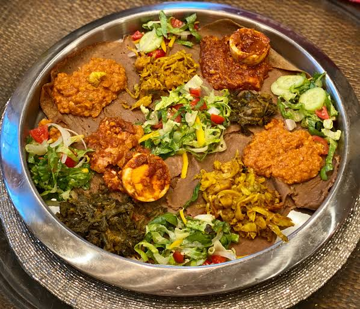

Injera
Ethiopia - East Africa

About this dish
Injera is a sour, spongy flatbread made from teff, a tiny grain that grows in the Ethiopian highlands. Stews are served on top of it and people eat by tearing off pieces. Feeding someone from your own hand is a sign of friendship called gursha.
Ingredients
4 servings
- 2 cups teff flour
- 1 cup all-purpose flour
- 1.5 tsp baking soda
- 1 tsp salt
- 0.5 cup plain yogurt
- 3 cups club soda
- Salt to taste
Cooking instructions
Step 1: Preparation
- Mix the teff flour, all-purpose flour, baking soda and salt in a big bowl.
- Stir the yogurt into the club soda, then pour it into the flour to make a thin batter.
- Let the batter rest for 15 minutes.
Step 2: Cooking
- Heat a non-stick pan on medium-high heat and rub a little oil on it.
- Pour about half a cup of batter in a spiral, starting from the outside.
- Cook until you see bubbles and the top looks dry. Cover for 30 seconds.
- Do not flip it. Put it on a clean cloth and repeat with the rest of the batter.
- Serve with lentil or vegetable stew.
| Nutrient | Amount |
|---|---|
| Calories | 190 kcal |
| Protein | 6 g |
| Carbohydrates | 38 g |
| Fat | 1 g |